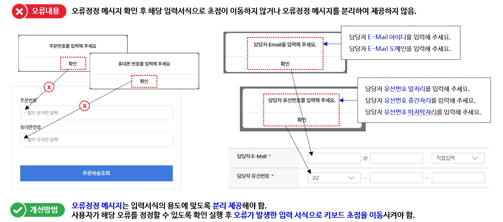
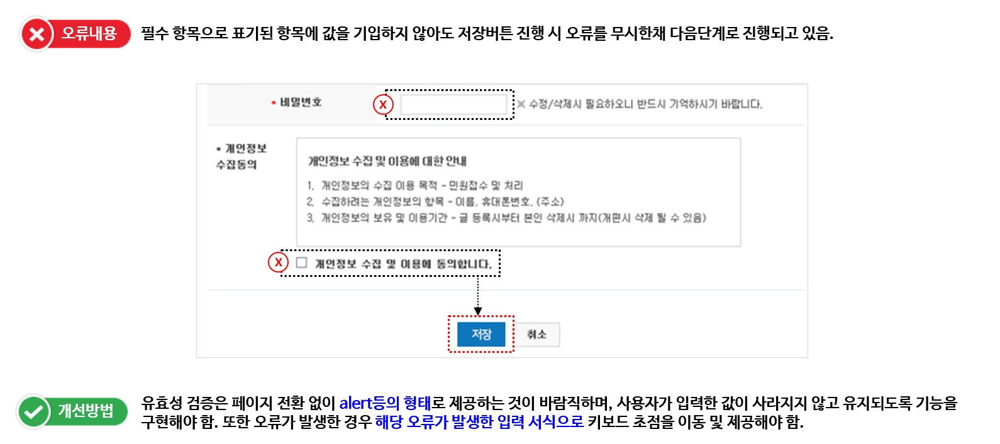
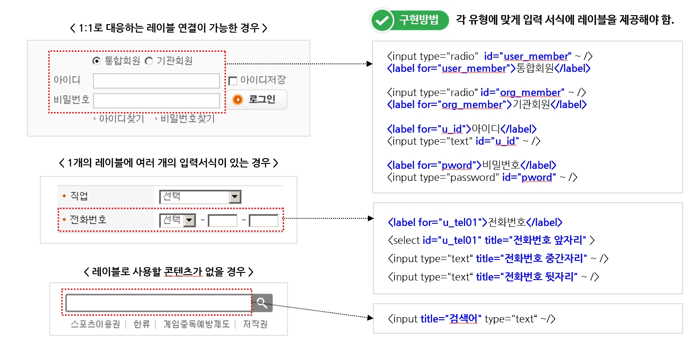
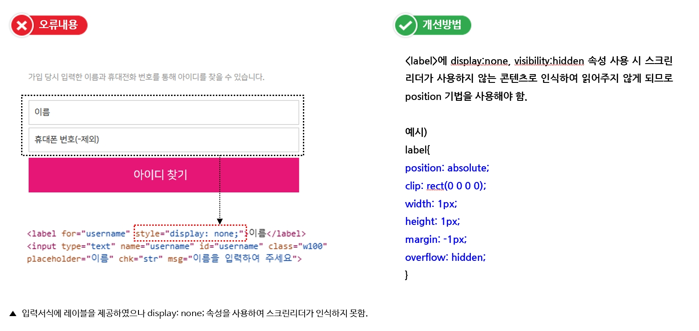
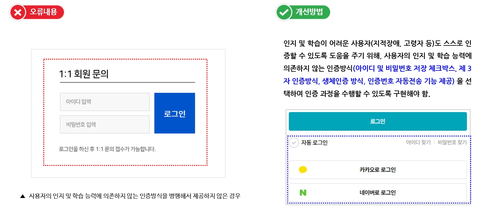
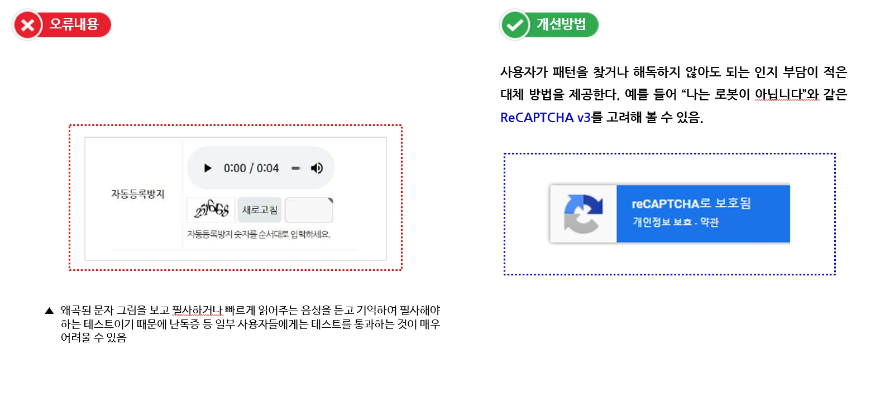
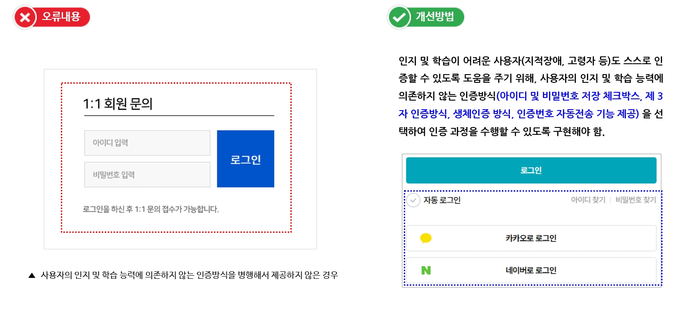
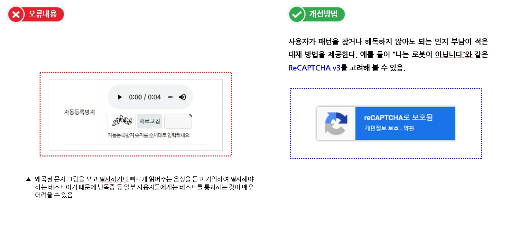
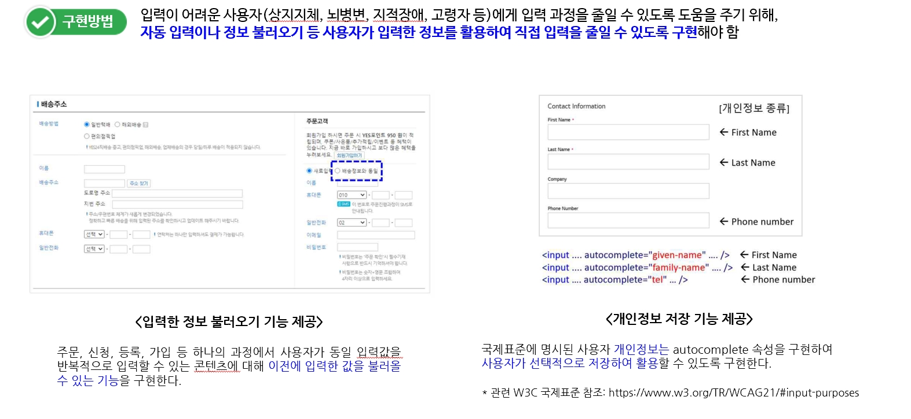
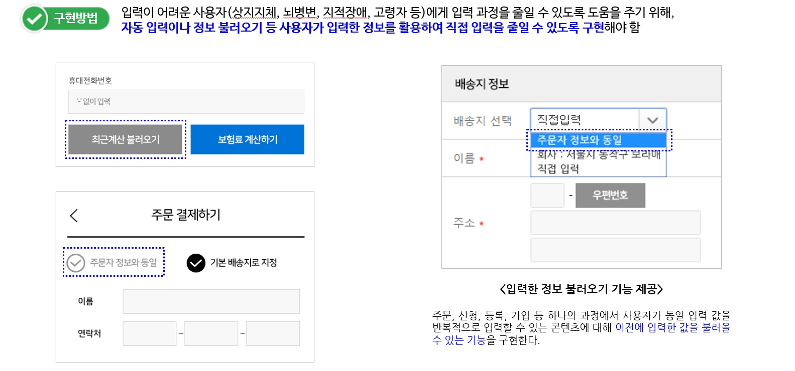

3.3 입력 도움
입력 오류를 정정할 수 있는 방법을 제공해야 합니다.
오류 정정, 레이블 제공, 접근 가능한 인증, 반복 입력 정보 등 사용자가 입력 오류를 방지하고 정정할 수 있도록 지원합니다.
3.3.1. 오류 정정
입력 오류를 정정할 수 있는 방법을 제공해야 한다.
• 입력 오류 발생 시, 오류 원인 및 내용을 적절한 설명 텍스트로 알려주지 않거나 적절하지 않은 경우
• 입력 오류 발생 시, 정정할 수 있는 수단을 제공하지 않는 경우
• 오류 정보 확인 시, 해당 입력 서식으로 초점이 이동하지 않는 경우
• 입력 오류 발생 시, 입력 내용이 모두 사라지는 경우
 3.3.2. 레이블 제공
사용자 입력에는 대응하는 레이블을 제공해야 한다.
• <input>, <textarea>, <select> 요소에 1:1 대응하는 <label> 요소 또는 title 속성을 제공하지 않거나 설명이 적절하지 않은 경우
• <input>의 id 속성값과 <label>의 for 속성값이 다르거나, 페이지 안에 같은 id가 있는 경우
 3.3.3. 접근 가능한 인증
인증 과정은 인지 기능 테스트에만 의존해서는 안 된다.
• 사용자 인증 과정에서 인지 기능 테스트(로그인을 위한 비밀번호 입력, 터치스크린 화면의 패턴 인식, 임의의 문자열 기억, 특정 객체를 포함한 이미지 찾기, 퍼즐 풀기 등)에 의존할 때, 인지 기능 테스트에 의존하지 않는 인증방식을 함께 제공하지 않은 경우
 



3.3.4. 반복 입력 정보
반복되는 입력 정보는 자동 입력 또는 선택 입력할 수 있어야 한다.
• 반복되는 입력 정보에 대한 자동 입력 또는 선택 입력 기능을 제공하지 않은 경우
 